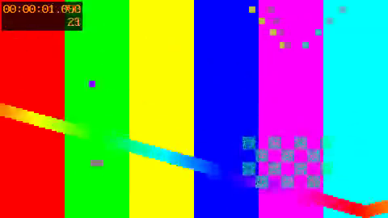

動画・音声・GIF
動画（再生バーと poster。title をキャプションにする）
幅と autoplay・loop（{width=320 autoplay loop}。muted を追加する）
キャプションの無い動画（title を書かない）
音声（再生バーと title のキャプション）
読み上げの見本です。
GIF（再生している。右上のボタンで止める）
GIF を止めた（動きを減らす設定のときもこの状態で始める）
読めない属性を書いた（{width=big loop}。異常シナリオ）
書き方の警告
width=big は読めません。幅は 320（px）か 50% のように書いてください。ほかの属性（loop）は当てています。